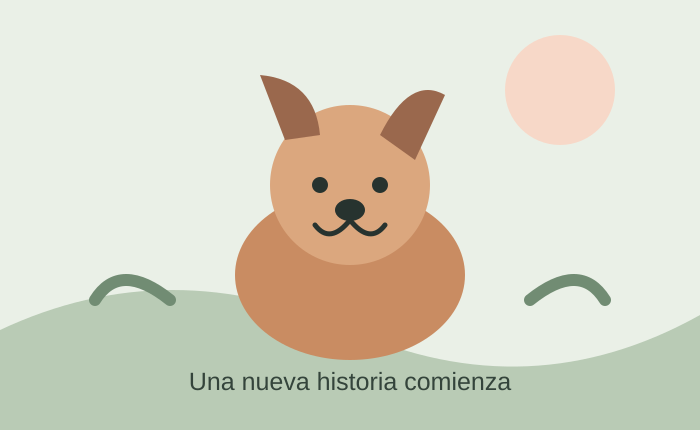

UNA FAMILIA CAMBIA CUATRO PATITAS
El amor también
se adopta.
Hay una historia esperando comenzar contigo. Conoce a nuestros perros y gatos y encuentra a ese compañero que hará tu hogar más feliz.
Adoptar es para siempre. Una decisión llena de cariño y responsabilidad.

♡ Un hogar, miles de momentos felices
QUIÉNES SOMOS
Pequeñas huellas,
grandes historias.
Huellitas en Casa es un refugio ficticio creado para promover la adopción responsable. Aquí cada mascota merece respeto, cuidados y una familia que la quiera durante toda su vida.
Conoce a nuestros compañeros, aprende sobre sus necesidades y elige con calma. La mejor adopción es la que se hace con compromiso.
Lugares de adopción en Cuernavaca
Encuentra asociaciones y refugios donde puedes preguntar por mascotas en adopción.
Consulta los horarios y disponibilidad antes de visitar cada establecimiento.
CONOCE A TUS FUTUROS AMIGOS
Buscan un hogar
Cada uno tiene una personalidad única. Desliza, conoce sus historias y encuentra tu nueva compañía.


*Las mascotas y sus datos son ejemplos demostrativos del proyecto escolar.
ADOPTAR ES UN ACTO DE AMOR
¿Cómo es el proceso?
Queremos que cada adopción sea segura, consciente y feliz para todos.
Conoce
Revisa los perfiles y piensa qué mascota se adapta a tu hogar y estilo de vida.
Conversa
Llena el formulario y platícanos sobre el espacio y tiempo que puedes ofrecer.
Convive
Coordina una visita para conocer a la mascota y resolver tus dudas.
Da la bienvenida
Prepara tu hogar y asume el compromiso de cuidarla toda su vida.
MOMENTOS QUE INSPIRAN
Un poquito de ternura
Las pequeñas cosas hacen grandes recuerdos.


ADOPTA, NO COMPRES ♡UNA HUELLA PUEDE CAMBIAR TU VIDA ♡EL AMOR NO TIENE RAZA ♡ADOPTA, NO COMPRES ♡UNA HUELLA PUEDE CAMBIAR TU VIDA ♡EL AMOR NO TIENE RAZA ♡
UN NUEVO COMIENZO
Historias que dan esperanza
Una familia puede cambiarlo todo.

HISTORIA DE EJEMPLO
De la espera a un hogar
Con paciencia, cuidados y cariño, cada mascota puede comenzar una nueva etapa.

UN COMPROMISO
Amor todos los días
La adopción no termina al llegar a casa: ahí comienza una amistad para toda la vida.
MIRA Y ESCUCHA
Conoce más sobre adoptar
Un mensaje para ti
Video local de demostración. Coloca tu archivo enmedia/video-adopcion.mp4.
Una historia en video
Video externo insertado con iframe responsivo.Un momento tranquilo
Audio local de demostración. Coloca tu archivo enmedia/audio-refugio.mp3.
INFORMACIÓN ÚTIL
Aprende a cuidar
Consulta recursos de bienestar animal y ten presente que cada mascota tiene necesidades diferentes.
Consultar información →JUEGA UN MOMENTO
Un cielo lleno de huellitas
Presiona el botón para dibujar nuevas huellas en el lienzo.
EL SIGUIENTE CAPÍTULO PUEDE SER CONTIGO
¿Listo para dar
un hogar?
Cuéntanos un poquito de ti y del compañero que te gustaría conocer. Este formulario es una demostración escolar de solicitud de adopción.
♡
Adopta con responsabilidad
Piensa en el compromiso de muchos años.
⌂
Prepara un espacio seguro
Tu nuevo amigo necesita tiempo para adaptarse.